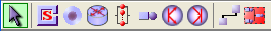
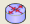
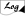
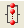
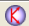
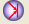

________________________________
To define a new model
select New from File menu or click the  icon and draw the
network topology.
icon and draw the
network topology.

Select the station and click on the model panel to insert
The available stations are:
Used to generate customers of open classes. |
|
Used to collect customers of open classes that are leaving the network (i.e. that have completed therir execution). |
|
routing station 
|
Distributes the arriving jobs to the connected output stations according to a set of pre-defined routing strategies.
|
logger station 
|
Passively logs traffic information to disk.
|
delay 
|
The jobs are delayed, according to a provided service time distribution, without a queue. |
Handles customer requests serving one or more jobs at a time (depending on the number of servers). Each queueing station is described by a waiting queue for the arriving jobs that are processed according to the queue policy. Each queueing station has a queue, a service time distribution and a routing strategy for the jobs that have completed servicing. |
|
fork 
|
Generates a fixed number of tasks (copies of the input job) on its forward links for each input job. Usually each fork in the network is used coupled with a join station, but this is not mandatory. |
join 
|
Waits for the complete execution of all the tasks of a fork and recreates the original job back. |
Used to connect two elements of the newtork. |
|
Used to create a Finite Capacity Region, i.e. a region in which the number of customers is controlled and limited. |